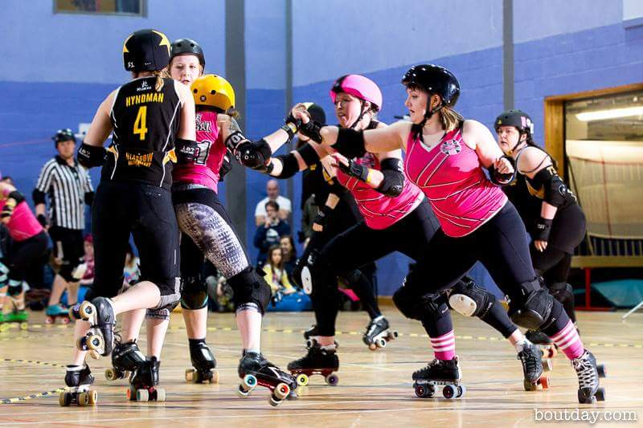

An interview with UKRDA Chair Tess Robinson
With the National Squads selection processes well underway, under the Observation of the UK Roller Derby Association, we thought it was a good time to catch up with the organisation's Chair, Tess Robinson, to find out more about what they do.
 Tess herself. (Photo: Graeme Willetts)
Tess herself. (Photo: Graeme Willetts)
I guess we should start by talking a bit about who you are, and what you do with UKRDA.
So, I'm Tess Robinson, and I skate with the London Roller Girls B, the Brawl Saints, and I am currently the Chair of the UKRDA Board of Directors, and also the Director of Internal Affairs.
Each of the Directors has a remit in terms of overseeing different committees, so I directly oversee Membership and Grievances, but really all of the directors are such a big team that we're always communicating and collaborating with each other about everything that comes to us.
So, it's not so strict in terms of what people oversee, we just work together to make sure everything runs smoothly.
After that easy intro question, I'd like to lead with something a bit more philosophically difficult: what is the purpose of UKRDA?
So, our mission statement is: "Promoting and Developing the Growth of the Sport in the UK". So, it would be very specific to the UK: we could just say "Growing and Developing the Sport", but it's specific to what we want to achieve in the country. And I think that's very special - because we have such great teams, and because the UK has something different to everyone else (I think that's true of every nation [that they have unique aspects], but I like what we have here). We've got specific kind of projects that we're working on now, but really, I just want to, this is a really difficult question…
The main thing that I would want people to see the UKRDA as is Themselves! After the AGM this year, I started trying to tout this hashtag, #YouKRDA , because I feel that a lot of people think that the UKRDA is a certain person, or a certain group of people. Maybe they think that the UKRDA is the Board of Directors, that we should be Doing Something (and we do, we do do lots of stuff), but people need to understand, and if I'm honest, take responsibility for, the fact that every single person whose team is a UKRDA member is a member of the UKRDA, and they have the power to do whatever they want with it.
A lot of people ask us, "What is the UKRDA, what does the UKRDA do; what is the UKRDA doing, why isn't it doing This?", and the simple answer is: because the community isn't doing it. We [the Directors] wholeheartedly listen to the members, and we just need our members to know that they have the power as individuals, to instigate any changes that they want to see.
So, for you, the democratic and communal nature of Roller Derby is key to how UKRDA works?
Definitely! UKRDA is a league of leagues. (Or, I think a lot of people are trying to move away from "league" as a word: UKRDA is a Team of Teams.) So, we're just one big Community. We oversee and ensure that everything is running as it should, and as we want it, as a community.
One of the things that I think is key to this Role for UKRDA is your relationships with the other bodies that affect Roller Derby in the UK - the WFTDA (on the side of Roller Derby), and the British Roller Sports Federation (on the side of UK Sports). How you do get on with and interact with them?
We have a really great relationship with both.
We have a great relationship with the WFTDA. Gareth Lowson, who was the previous Chair, and is our Director of External Engagements, did some amazing work building a strong working relationship with the WFTDA. He met personally with [WFTDA Executive Director 2009-2016, Juliana Gonzales] Bloody Mary a number of times, and they had a really good working relationship. And the WFTDA have always supported us, especially in things that we've done that they haven't. Like: we've just started sanctioning and chartering B-teams; they were supportive of that idea. There was a big B-Team tournament in the USA last year, I think Gareth went to that, or he spoke to Bloody Mary after that, and told her about this multi-team sanctioning that we were at the time trying to vote through, and she thought it was a really great idea. It makes me really happy to know that someone representing the Directors of the WFTDA is supportive of what we're trying to achieve. She's always helped with UKROC and been supportive of our events. Obviously, she's just stepped down, and there's soon going to be a new person in her place [new WFTDA Director Cassie Haynes], and we're hoping that we'll be able to forge the same strong bonds that we've had, with her. But, generally, our relationship with WFTDA has always been good because we're always trying to follow in their footsteps, and they always try to support what we do.
Well, sometimes you're ahead of them - the UKRDA Gender Policy, for example.
Yeah!, we work together and it's you know, very much a relationship!
On the other side, with BRSF… BRSF is a really interesting kind of link that we have, because that is how we receive recognition from Sport England, which is kind of the key to sporting achievement and recognition in England. As the biggest organisation for sports in the UK (not to downplay what Scotland and Wales have, we've not had as much of a tie with them) in England at least, they recognise Roller Derby as a sport because we have our tie with the BSRF, which is really great for us. And, it's pretty clear, I haven't got definite numbers but I'm 99% sure that, Roller Derby is officially the biggest roller sport in the UK. Out of all of the other disciplines that the BRSF cover - roller hockey, inline hockey, inline speed skating and artistic skating - I'm pretty sure that we have more members than all of the rest of them combined. So it seems ridiculous that the only way we can garner recognition from these big kind-of multi-sport governing bodies, like Sport England, is through BRSF, given our relative sizes. But! That's our gateway, and BRSF is a really important organisation, not just for us but for all roller sports.
*In a way, isn't an entity UKRDA what Sport England needs in order to conceptualise how to interact with a sport, though?
Completely! So, we have strong ties again with BRSF; Gareth sits on their board of Directors as our representative, but I feel like Roller Derby is really a pioneer in Roller Sports in that respect. We are far more proactive and we have a bigger membership, and we're more of a go-getter than the other sports. Probably because we have more that we need to achieve, in terms of getting that recognition, but the other sports aren't really fighting for anything. (But we are.)
 Tess Robinson with London Brawl Saints versus Glasgow Roller Derby (British Champs Tier 1). (Photo: Dave McAleavy)
So, moving to the internal aspects of UKRDA; obviously, UKRDA has some obvious things that it has organised - there've been two UKROC conferences now, and the Tattoo Freeze tournament is something of a long-standing tradition. What else does UKRDA do for the community?
Yeah, Tattoo Freeze is something that we put on, or we try to put on, every year. They've now asked us to start paying, to do it; I'm not sure if that means we'll continue it. But…
Man, what is other stuff we've done(?)
One of the big kind-of things which I think is a really great achievement is our insurance that our members get. They get just a super insurance deal through our brokers, and it's something that we get a lot - I'm on the info@ukrda.org.uk email account, and by far the most frequent inquiry we get is about insurance and how, especially new teams; a lot of new teams can't get practice space if they're not insured, and they struggle to find people who will insure them in the sport, so one of the biggest achievements we've had is a reasonable and [searches for word] comprehensive enough to cover what we do, so that we can continue to play. So that's something that's really great. and I'm pretty sure it's the most competitive rate that anyone will get for this sport in the UK
Another thing is just, well, I dunno, we provide a community and we try and make things fair; the National Squads is something that's huge, and a lot of that is going on right now. I think it's very important to have those.
*We should say that this is the Women's National Teams; and that this is a fairness-motivated oversight role, not a controlling role.
Yeah, the way it works is that we facilitate the recruitment of the Women's National Teams, the ones who are affiliated and soon to be affiliated, (and there will be more news on that coming up in terms of Men's teams, following the World Cup and things like that). We facilitate the recruitment, to make it fair - one thing that I've always wondered was, in countries where there's not a national governing body, like the UKRDA, how do they even start? Where do they begin? Who just Decides that they are going to start the national team? I feel that the UK is lucky to have something to kind of do that [in an impartial way] because it's something that's so big and so important for our sport to have National and International recognition. And then, basically, after Management is recruited, the National Teams go off and do their own thing, and the only position that the UKRDA takes is that things are done fairly, and there's no kind-of-like favouritism, bias; to make sure that if people have problems, they have someone that they can come to; and because the National Squads are affiliated [with UKRDA] they get votes on our policies, because those affect the National Squads as well.
So, the National Squads are huge and it's a massive part of what we do, so it's important that we feel that they are run correctly and fairly, so that people can have the best time.
*It's important to note that this does not mean that you have to be from a UKRDA member league to apply for National Team Management. The involvement of UKRDA is not intended to restrict skaters from applying! Yeah. Yeah, with Team England Women's parting from their affiliation last time around, I feel like people got certain ideas about why and what happened, and I mean, there were disagreements, there always will be, especially when two partners are working together like that, and Big Names like England and UKRDA, there's always going to be disagreements in things that are done. But I will say that since then, we have made massive changes, we've listened to all of the National Squads and our Members on what they want us to do, what the National Squads want us to do, we've had so many meetings, both in person and over the phone, and we've made a huge effort to conform to how our members want the National Squads setup to be, so that it can be what everyone wants.
So, what they want is: for National Squads to operate as their own entities, but with, a Body in place, so that if something goes wrong, they have that support, which is what we will do.
So, and that's it really. Absolutely no restriction going on. [laughs]
This kind of centralised oversight is a model being adopted in other countries, to various extents for the French and German national teams, for example...
Hmm, yeah, and it's always really nice to get questions and requests for support from other countries. Like with Spain: last year, they came under fire from FIRS when they couldn't get training venues for their teams, and they came to us and said, "You guys have obviously created a National association that would deal with this kind of stuff, and we don't have that, and we don't want FIRS to, you know, kill our sport over here, or take it, at least. Will you help us?" And so that was really nice, to have that recognition that we've done something good, and that other people want our support, was a nice realisation to have as a National Governing Body.
UKRDA was (possibly) the first Roller Derby national association...
It was, yeah!
So, you guys have more experience at this than everyone else.
Yeah, it makes me really proud to think that we were the first ever National Governing Body, for Roller Derby. And so, I think the whole community needs to give itself a pat on the back for making it something that has worked for so long…
It's been about 6 years since first AGM...
[surprised]Erm, possibly, I don't…
The first AGM was in 2010, so…
Oh, okay, then yeah!
 Tess v Newcastle Roller Girls' Gin + Sonic (Photo: Dave Moore)
Tess v Newcastle Roller Girls' Gin + Sonic (Photo: Dave Moore)
So, although UKRDA was the first NGB (and some people tend to think of it as an inflexible Institution), 6 years isn't so long that there's not the possibility for change and growth.
Definitely! I mean, one thing that I certainly learned, coming into the UKRDA, is that there is an infinite amount of room for change. I have no problem admitting that, before I joined as a member of the board of Directors (I joined in 2015 as Secretary) I was exactly one of those people who was like: "Urg, the UKRDA does nothing, I don't understand what their purpose is, what are they doing for us?". I was 100% one of those people. And it wasn't until I actually sat down and spoke with Gareth about it at EROC that year that I realised all of the things that I'm now telling you! And so, then and there, I said "I'm in! I'm up for it: how can I help, how can I start changing things?". I came in, and I just said "I want to do: this, this, this", and everyone was like "Great: you go and do that".
And that is exactly the way that I would be if anyone else came to us with ideas. I think people were surprised at our AGM; at how open we were. I said to people, "You know, what do you want to see? What do you want the UKRDA to do? What do you want us to achieve in 2016?" And people had so many ideas, which is excellent! It's so great to have that! People just need to realise that they can't just give ideas and expect someone else to do them; as much as we need ideas, we need people to follow them through! And we've been incredibly lucky that a lot of those people have stayed on since the AGM to follow a lot of these things through. This first kind of part of the year has been really positive in terms of getting things done and ideas moving.
So, these ideas, are they secret? Tell us about them.
Yeah, all of them [are public]. So, a lot of the projects that we're working on are… you don't have to be a Rep or someone with a Post in the UKRDA to work on something, anyone that's part of a UKRDA team [league] can help. I would say anyone outside of the UKRDA can help! We would never put barriers up against people who want to give us their time.
One of the things that we're doing is looking into sublimation of our patch onto uniforms. So, we're scoping out suppliers, finding out Pantone numbers, and getting samples in. So, we're going to be contacting a lot of suppliers soon about that. We are looking into how to incorporate and support invisible illnesses more. So that's anything, any disabilities that are not like, breaking your leg, the stuff that you can't see - anything from mental illness, chronic illness, epilepsy, anything like that. So we've started recruiting people who seem interested, to start putting together policies, guidance and support resources on that kind of thing. which is excellent - a lot of people from the Community on Facebook for Roller Derby mental health have been really supportive and helpful with that.
A massive one for this year, and I think probably infinitely, for ever, is Coaching Qualifications. Everyone wants to see Coaching Qualifications, so that's something that we're trying to work hard with now. There's so much politics and [so many] complex relationships that we have to work on with Sport England and Sports Coach UK, coaching structures in the BRSF, in order to get that done. So it's expensive, but given that I think it's so important - I'm a real driver of that ambition, because it unlocks funding, and that's so important. We have a lot of councils who will deny spaces for Roller Derby, or deny funding for Roller Derby, because they don't have qualified coaches. So, I think as soon as we get that, both teams will be able to get funded easier, and also it brings in an income, both to the UKRDA and to people who are Coaches in our community, something which I think is really important. Obviously, it's the kind of thing which we would charge for: we can't offer things for free when people are going to work so hard. We're going to have coaches writing specifications and curricula, and delivering the courses, and travelling; so it's the kind of thing we'll charge money for, and the kind of thing that the UKDA would make a "profit" from, but only because we would want to give that money back to coaches, for their time, and also fund ourselves so that we can do more. Obviously, we are a non-profit organisation, but we don't have any way of making money right now. So, I feel like it's important for us to have money, so we can give it to other people! One of my dreams is that one day, the UKRDA will have a steady income, and will be able to offer grants to teams that they can then apply for it - for travel, or uniforms, or hire-kit for fresh meat, venues. That's kind of like one of my ultimate dreams for what I want us to offer as a governing body. We just need to build up first!
And you have only been going for 6 years! I know! So ambitious (!).
There's lots of stuff going on with Officials as well. We're trying to champion this new kind of position, where we will offer, I think - this comes from Rocky, our Director of Officials, so I might get this wrong - we want to develop something along the lines of offering an Officials Observer to watch games, to more usefully fill out Officials Evaluations. You know, I still compete in the sport, and we always get chucked a handful of eval forms at the end of a game, and you think: I wasn't even watching the officials, I have no idea how to fill this out, so it results in stress for the teams filling it in, and the officials end up with poorly done evaluations; and most of the time people will only say stuff if something went badly, so we really want to offer something more for the officials on that sense And personally, I'd just like to see more development and support for officials in the UK anyway; I know it exists out there, but I'd love to see more training, and stuff for newer refs, to make their transition into officiating as great as possible.
So, that's quite a lot of things(!)
Yeah, it's a lot of things!. And there's a lot more, as well: we've just gotten Valkyrie on board, as our Director of Gameplay, and she's really doing a lot of work to forge this connection between British Champs and the UKRDA. She really wants that to become more cohesive, so that we can offer better gameplay across everything.
So that's the Big Stuff that we're working on; there's a lot of little things from day to day that we join up with, so …
People might think that's a lot of stuff, but I would still welcome 10 times more, if it meant that it made our community happy.
So, I'd like to talk a little about a sore point, perhaps: UKRDA's visibility. You've said earlier that you didn't know what UKRDA did before you joined it. Do you think this is still a problem - that no-body seems to know what UKRDA does?
It's definitely a problem: what's the point in having an organisation like ourselves when people don't know about it? A lot of people from outside the sport that I've talked to about it say "Well, how many members do you have?" I say "we have 63 or 64 members" (maybe, it is 65 now?), and they say "Oh, cool!", but I say, "Well, yeah, but there's also so many more teams in the UK who aren't members…", and they say "WHY? Why would they not be members?" and I think, Well, I dunno(!) People say "What's your strategy for recruiting those teams?" and I think "I dunno… there's so much more work that we could be doing…" Especially in regards to communications - all of last year we had a really great Director of PR & Communications, Katy [Gordon] from Auld Reekie Roller Girls, and she did a great, I think two or three years, with UKRDA. She stepped down at the most recent AGM, and we had no-one run for Director of PR, and no-one run for Head of Communications in the first round. We've only just had a couple of people step up and apply to be our Head of Communications. So certainly for the first part of this year, we've had no-one to do our PR - it's just me and the people who are still on the PR Committee, kind of doing bits and bobs now and then.
So that's a massive gap in our organisation. Obviously, I don't really know anything much about it, and hopefully we've now got a new Head of Communications, but it's come at such a crucial time, when we've had all of the National Squads stuff, that it's really left us in not a great situation, with poor turn out for [Squads] Management Applications. So it's definitely something that we could improve on… I have nothing against admitting that.
It's just a matter of getting people who want to work with us, and all that kind of stuff.
And hopefully your new Head of Communications will be spearheading this.
Yes, definitely! * On the topic of National Teams, you yourself are trying out for Team Wales, I hear. [This interview occurred just before the Team Wales first round tryouts on 24 April.]
Yeah! I tried out last time, and I got through round 1, and I was really gutted that I couldn't attend Round 2. I was at University and it was the same date as one of my assessments which I definitely couldn't miss, because it was the equivalent amount of credits as my dissertation. It was the kind of thing that was assessed on one day - it was a theatre performance; I did Drama at Uni. So I was super gutted that that kind of ruled me out completely, so I did feel a bit lost, knowing that… I was a real champion for the Welsh teams that we have; I came from Swansea Roller Derby, and I know a lot of people in the Welsh Roller Derby Community. It was really sad, also exciting, to see so many of my friends, you know, go to the World Cup, I was so supportive of Team Wales - so that was really, like a Challenging Time.
But! I've waited, and worked really hard for the past 2 to 3 years, to be able to try out again, and I've graduated from Uni now, so there's nothing, absolutely nothing in my way. I'm really excited, and I absolutely cannot wait for tryouts on Sunday.
It's going to be great to see my friends, it's going to be great to give my all, and see the other people that are trying out. You know it's been 4 years since I played Roller Derby for a Welsh team, and the community and the people there have changed a lot, so I'll be really excited to meet new Welsh skaters, and people from new teams. so, it's just a very exciting time!
I just can't wait for the whole process to get going, it's going to be great!
- Hopefully you make it, at which point you'll be on 3 important UK Derby entities [London Roller Girls, Team Wales, UKRDA]!
[laughs] Yeah, I'm feeling confident, you know! I play at a high level, and I work really hard: as long as I do my best, that's all that matters and counts . Obviously, because I am also Chair of UKRDA, and trying out for a National Squad, my permissions have been quashed, so I can't actually see inside any of those files and folders; so, yeah, I'm not allow access to any of that! Before I try out, I was, as Chair, with the National Squads, if there's ever a tied vote, the Chair is the deciding vote, so I'm now no longer allowed to do that(!). Which is fine: there's a lot of privilege that I've lost, through trying out, but I don't think there's any greater privilege than representing your country, so it's really important to me.
I'm excited.
Good luck!
Thank you!